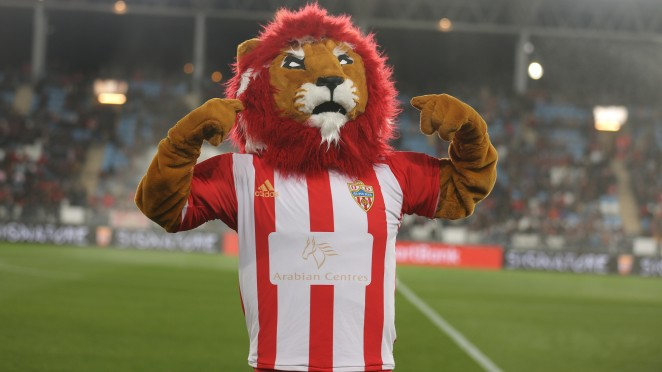

El 11 del Almería
Aquí tenemos a nuestros guerreros que nos aseguraran la victoria.
Nuestra mascota
El Almería ya tiene mascota, Rozam, un león vestido con la equipación oficial rojiblanca, que fue presentado en sociedad con motivo del partido disputado por el conjunto almeriense frente al CD Mirandés en el Estadio de los Juegos Mediterráneos.
Estadio
El Estadio de los Juegos Mediterráneos, llamado por motivos de patrocinio Power Horse Stadium, es un recinto deportivo de la ciudad de Almería, España, sede de los partidos de la U.D. Almería.
Nuestro Mister
Joan Francesc Ferrer Sicilia, conocido como Rubi, es un exfutbolista y entrenador español que desde abril de 2021 dirige a la U. D. Almería.
Nuestra ultima salida
Sadiq Umar Mesbah, más conocido como Umar Sadiq, es un futbolista nigeriano que juega como delantero en la Real Sociedad de la Primera División de España.